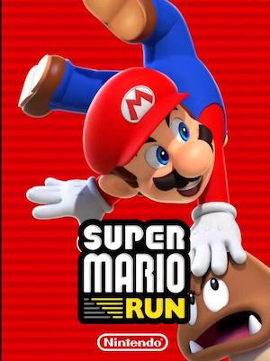

My name is John King and I am currently a senior at San Francisco State University. I grew up in the Bay Area and decided to continue going to school there as well, This is my last semester at SFSU as a computer science major until I graduate. Some of my hobbies include listening to music, doing sports, and playing games. You could tell by the top five page, but I really enjoy listening to kpop and watching videos from my favorite groups.
I have not done sports this year yet, but I used to do multiple different sports and would like to start again, something like taekwondo. My favorite games are in the top five page as well, but I have found that any game with Mario in it are my favorites, the graphics are so good and the games are so fun. I also really enjoy learning new languages, I learned Spanish in school as well as by myself, and I am currently learning Korean.
I come from a Greek background, so my favorite food is pasticho, a type of Greek food, I also really like dolmades. When I was in elementary school I started drawing, and I have been interested in art since then. Although I do not do art as much now as then, I found website development to be my most fun course in the computer science major, which is why I have decided to take Website Design.